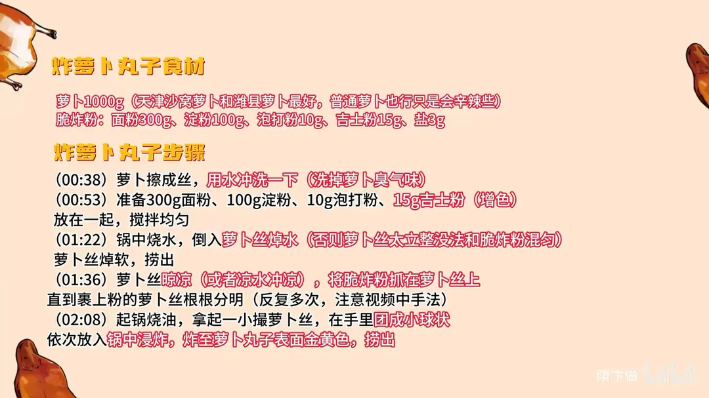

炸萝卜丸子
隋卞一做。萝卜 1000g 擦丝后用水冲洗去臭气，焯软晾凉；面粉 300g、淀粉 100g 加泡打粉、吉士粉调脆炸粉，抓至萝卜丝根根分明，团成小球入锅浸炸至金黄。
原视频：https://www.bilibili.com/video/BV1LDkMYFEr3
食材
萝卜、面粉 等 6 样
| 类别 | 用料 | 用量 |
|---|---|---|
| 主料 | 萝卜 | 1000g（天津沙窝萝卜和潍县萝卜最好，普通萝卜也行只是会辛辣些） |
| 脆炸粉 | 面粉 | 300g |
| 脆炸粉 | 淀粉 | 100g |
| 脆炸粉 | 泡打粉 | 10g |
| 脆炸粉 | 吉士粉 | 15g |
| 脆炸粉 | 盐 | 3g |
步骤
- 擦丝：萝卜擦成丝，用水冲洗一下，洗掉萝卜臭气味。
- 调脆炸粉：准备 300g 面粉、100g 淀粉、10g 泡打粉、15g 吉士粉（增色）、3g 盐放在一起，搅拌均匀。
- 焯萝卜丝：锅中烧水，倒入萝卜丝焯水（否则萝卜丝太立整，没法与脆炸粉混匀），萝卜丝焯软，捞出。
- 抓粉：萝卜丝晾凉（或者用凉水冲凉），将脆炸粉抓在萝卜丝上，直到裹上粉的萝卜丝根根分明（反复多次，注意视频中手法）。
- 浸炸：起锅烧油，拿起一小撮萝卜丝，在手里团成小球状，依次放入锅中浸炸，炸至萝卜丸子表面金黄色，捞出。
讲解要点
难度：★★☆☆☆（不难，难在把粉拌到根根分明、油温别冲高）
为什么这么做
- 萝卜挑沙窝、潍县这类青萝卜：甜、水分足、脆，炸出来没有辣气和臭气；普通萝卜也行，只是辛辣些。
- 萝卜丝先冲洗、再焯软：洗和焯都在去臭气、辣气；生的萝卜丝支棱着，根本拌不上粉。
- 焯后冲凉水再拌粉：热的萝卜丝会把粉烫成坨，凉了才能一根根裹上。
- 粉用面粉 + 淀粉 + 泡打粉 + 吉士粉 + 盐：面粉给黏、淀粉给脆、泡打粉让丸子发蓬，吉士粉增色增香。
- 拌到一根是一根：粉只裹在每根丝上，炸出来才酥；拌成一团糊，成品又硬又实。
- 手里轻团、中间留蓬松：捏死了里面不蓬不糯，只剩一层硬壳。
- 五成油温下锅、中火浸炸，快出锅转大火：低温浸透让里面熟软，最后大火上色并把窝在里面的油逼出来。
容易翻车
- 萝卜丝焯过头，出水太多，拌粉成坨、丸子不成形。
- 趁热拌粉，粉被烫熟结块。
- 油温冲太高，外面焦了里面还是生萝卜味。
- 丸子团得太实，炸完硬邦邦。
- 普通萝卜没焯透就炸，臭气和辣味都留在里面。
原片尾卡

原片文案
AI 字幕校准稿
上次在烟台吃了一个超好吃的炸萝卜丸子。它是拌了点脆皮糊，炸完之后外面酥酥的，里边是很香的萝卜那种香气。咱们正常萝卜炸出来可能会有点萝卜的辣，还有萝卜的臭气，但是它这个一点都没有。
他们介绍，这属于潍坊萝卜，口甜、水分足、脆，所以做这个选得不错，挺容错的。回北京试着给你们做一个。
青萝卜削完皮以后擦成丝。天津的沙窝萝卜和山东潍县的萝卜都可以，这两个地方的萝卜香甜、水分足；实在没有，普通的青萝卜也行，只不过稍微辣一点。
咱们先把水烧上。炸萝卜那个粉子跟你们说一下：面粉、淀粉、泡打粉、盐和吉士粉，把所有的粉都放在一起搅拌均匀就可以了。搅匀之后放在旁边。
咱们的萝卜丝需要焯下水，你看这样支支棱棱的，没法拌。锅烧开，往里一倒，焯水还能去一部分腥气和臭气。只要是萝卜烫软了就可以了，捞出来。有点烫手，我冲一下凉水。
然后把萝卜丝拌上粉，把萝卜拌成一根一根的，拌到这种状态就可以了，看着是一根是一根的。攥出一小捏，搁手指轻轻团一下，让它中间有蓬松感，大概是个圆。
五成油温下锅，大火一翻花，一定要关小火，很容易上色，中火浸炸。快出锅的时候，你看炸成这样浅金黄了，然后大火把里边窝的那点油再给它炸出来，可以了，出锅。
我觉得这丸子特别好的一点，就是它完全没有萝卜那点臭气，外面是酥的，里面是软糯和萝卜的甜。它不是那种很重香料的味道，就是很单纯的只有萝卜的清香气，而这种清香气很好吃。
主要是这道菜确实太简单太好做了，但它的味道又足够好吃，大家随手在家一做都能做，出来试试吧。冬吃萝卜夏吃姜，提前给大家拜个早年。